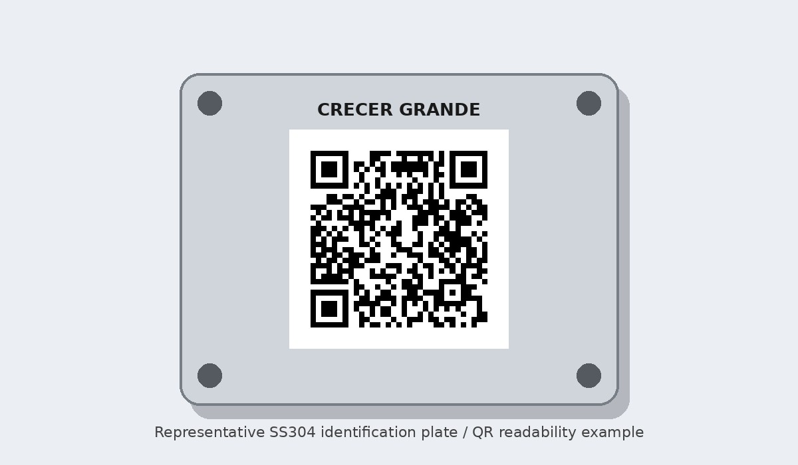

Industrial traceability project
SS304 QR Code Laser Marking & Identification Plates
Laser cutting, permanent company-name marking, 60 individual QR codes and QR readability verification.
Requirement
Produce 60 SS304 identification plates. Each plate carries a different QR code supplied by the customer. The work combines laser cutting, marking-data control and post-marking readability checks.
MaterialSS304
Size70 × 70 mm
Thickness0.5 mm
QR50 × 50 mm
Quantity60 Nos.
Variable data60 different QR codes
Process controls
- Customer-supplied QR data sequence
- Part-to-code matching
- Marking location / quiet-zone review
- Visual marking check
- Phone / scanner readability verification
- Sorting and packing control
Need a similar traceability plate or marking job?
Share the plate drawing, material, quantity and QR data format.